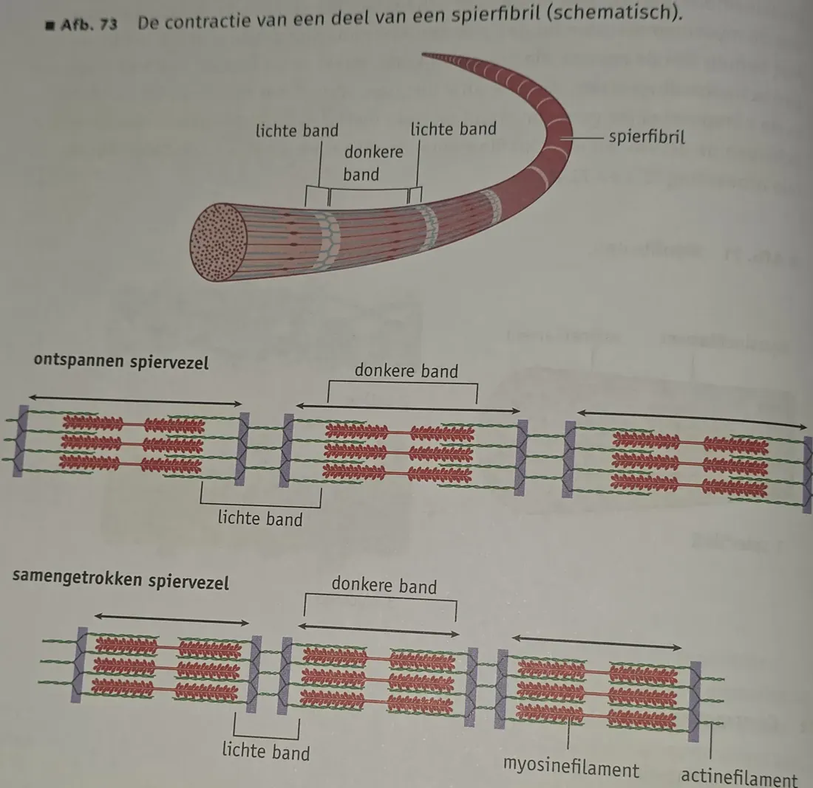
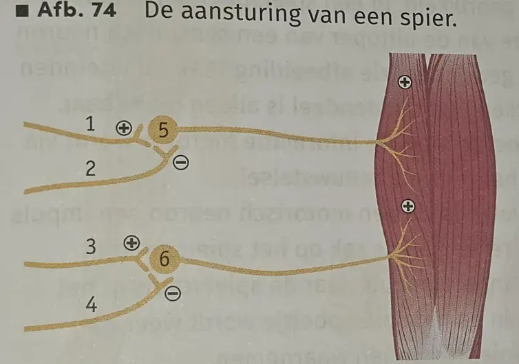
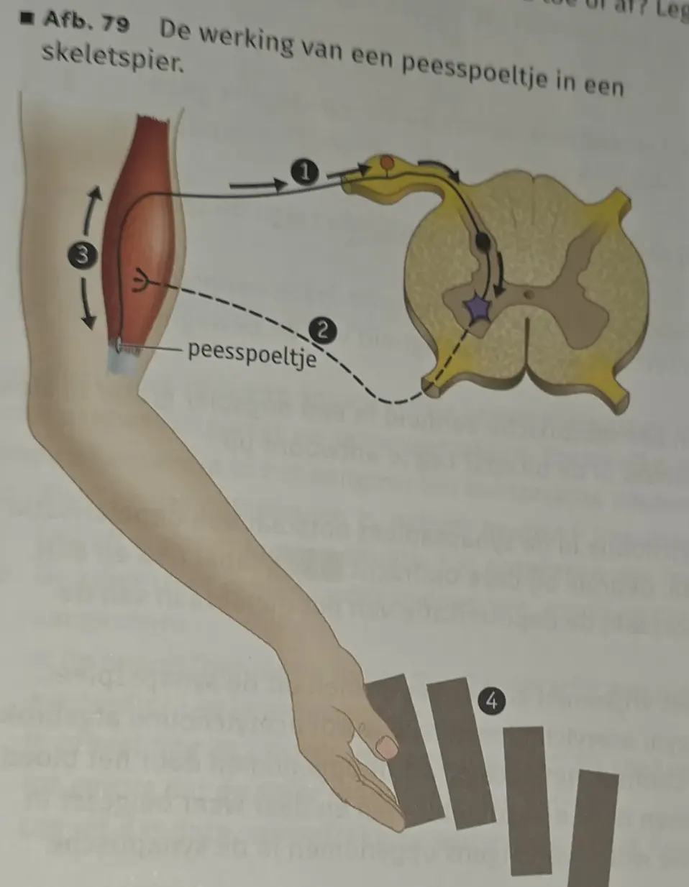
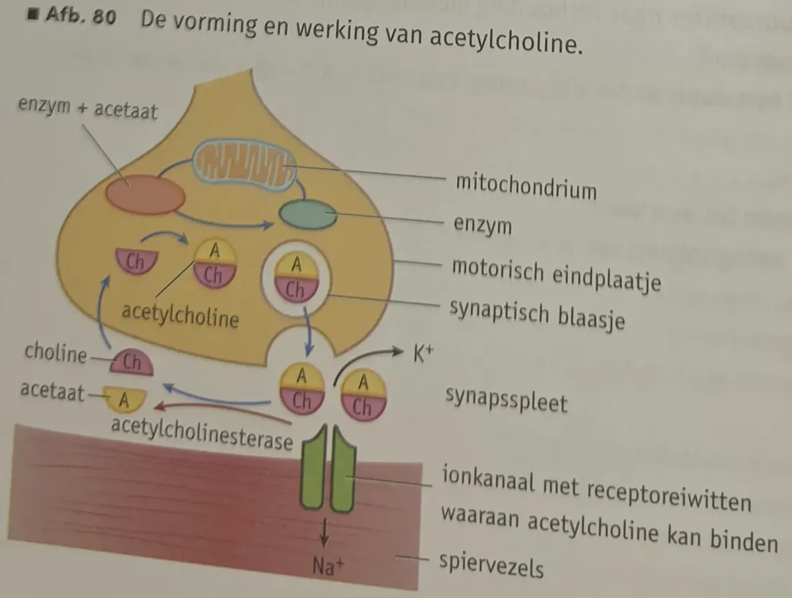
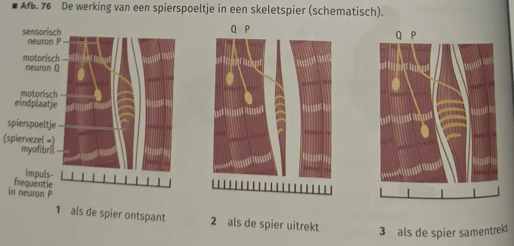

- 7.6.1 Je kunt de bouw en functie van glad spierweefsel en dwarsgestreept spierweefsel beschrijven.
- 7.6.2 Je kunt de bouw en werking van spieren beschrijven.
- 7.6.3 Je kunt de effecten van training, revalidatie en dopinggebruik uitleggen.
Typen spierweefsel
| Glad spierweefsel | Dwarsgestreept spierweefsel | Hartspierweefsel | |
|---|---|---|---|
| Bouw | langwerpige spiercellen, elk met één kern | spiervezels: versmolten spiercellen met veel kernen; dwarse strepen | spiercellen met vertakkingen; dwarse strepen |
| Waar | huid, wand van darmkanaal, luchtwegvertakkingen, iris, bloedvaten | skeletspieren, gelaatsspieren | hart |
| Aansturing | autonoom zenuwstelsel | animaal zenuwstelsel | autonoom zenuwstelsel |
| Contractie | traag, raakt niet snel vermoeid | snel, raakt snel vermoeid | — |
Dwarsgestreept spierweefsel speelt ook een rol bij de lichaamshouding en de warmteproductie.
Bouw van een skeletspier
- Omgeven door een spierschede van bindweefsel, die overgaat in de pezen. Pezen bevestigen de spier aan het skelet, kunnen niet samentrekken en zijn slecht doorbloed.
- Spier → spierbundels (met bindweefsel) → spiervezels → spierfibrillen (myofibrillen) → filamenten.
- Dunne filamenten: actine. Dikke filamenten: myosine. Hun regelmatige ligging geeft lichte en donkere banden (BiNaS 90C).
- Donkere band: myosine (met overlappende actine).
- Lichte band: alleen actine.
Motorische eindplaatjes en acetylcholine
- Motorische eindplaatjes = uiteinden van de vertakkingen van het axon van een motorisch neuron op de spiervezels; de meeste spiervezels hebben er één.
- Motorische eenheid = één motorisch neuron + alle spiervezels die ermee verbonden zijn.
- Een impuls → acetylcholine komt tegelijk in alle eindplaatjes van de motorische eenheid vrij → bindt aan receptoren → EPSP → contractie.
- Alles-of-niets: boven de prikkeldrempel trekken alle vezels van de eenheid tegelijk en maximaal samen. De kracht van een spier hangt af van het aantal motorische eenheden dat tegelijk samentrekt.
- Motorische neuronen vuren niet gelijktijdig: sommige eenheden trekken samen terwijl andere ontspannen → spier raakt minder snel vermoeid.
Contractie
- In rust overlappen actine en myosine nauwelijks; de bindingsplaatsen voor myosine op actine zijn afgedekt.
- Na impulsoverdracht diffunderen Ca²⁺-ionen de myofibrillen in en binden aan eiwitten op actine → bindingsplaatsen komen vrij.
- De gebogen myosinekoppen splitsen ATP in ADP + P; met die energie strekken ze zich en binden aan actine.
- ADP en P laten los → kop springt terug in de gebogen stand en trekt het actinefilament mee.
- Actine en myosine schuiven in elkaar → spiervezel korter. Lichte banden worden smaller, donkere banden blijven even breed.
- Bindingen verbroken → spiervezel ontspant. Daarna een herstelperiode: afvalstoffen weg, zuurstof aangevoerd, ATP aangevuld.
Glycogeenkorrels tussen de spierfibrillen zijn een voorraad glucose voor de energie (ATP) bij contractie.
Houding, tonus en reflexen
- Ook ontspannen is een skeletspier niet maximaal ontspannen: telkens trekken een paar motorische eenheden samen → lichte kracht op de pezen = tonus (spierspanning). Belangrijk voor de lichaamshouding (zitten, staan).
- Evenwicht via reflexen: helt je naar voren, dan trekken de kuitspieren reflexmatig samen.
- Spierspoeltjes (tussen de spiervezels): gespecialiseerde vezels met een sensorisch uiteinde in een spiraal eromheen. Spier rekt → spoeltje rekt mee → sensorisch neuron meldt dit aan het CZS → motorisch neuron laat de spier samentrekken (rekreflex) → rek opgeheven. Tegelijk trekken de uiteinden van het spoeltje samen, zodat het weer op spanning is om nieuwe rek waar te nemen.
- Peesspoeltjes (overgang pees–spier): gevoelig voor spierspanning. Ze kunnen via een schakelneuron in het ruggenmerg het motorische neuron van de rekreflex remmen. Bewegingen worden vloeiender en de spier wordt beschermd tegen te zware belasting.
Antagonisten
- Een spier kan een bot maar één kant op bewegen. Spieren met een tegengesteld effect zijn antagonisten, bijv. biceps (buigt de arm) en triceps (strekt de arm).
- Trekt de biceps samen, dan daalt de tonus van de triceps (relaxatie), zodat de biceps minder weerstand ondervindt. Bij strekken andersom.
Spiervezels, training en doping
| Langzame (rode) spiervezels | Snelle (witte) spiervezels | |
|---|---|---|
| Doorbloeding | goed | minder |
| Mitochondriën | veel | minder |
| Eigenschap | raken niet snel vermoeid | trekken sneller en krachtiger samen, raken snel vermoeid |
De verhouding is grotendeels genetisch bepaald.
- Krachttraining: spiervezels worden dikker (meer filamenten in de myofibrillen) → spieren zwaarder.
- Duurtraining (uithoudingsvermogen): vooral de doorbloeding neemt toe; spieren worden niet zwaarder.
- Warming-up (± 15 min): bloedsomloop gestimuleerd → meer zuurstof en glucose, minder blessures, snellere stofwisseling.
- Coolingdown: hartslag geleidelijk omlaag, afvoer van afvalstoffen → minder stijfheid en spierpijn.
- Beweegrichtlijnen voor jongeren: elke dag minstens een uur matig intensief bewegen, minstens 3× per week spier- en botversterkend, weinig stilzitten.
- Doping:
- Anabole steroïden (werken als testosteron): meer spierweefsel en meer rode bloedcellen.
- Epo: meer rode bloedcellen → meer zuurstoftransport → groter uithoudingsvermogen.
- Bijwerkingen: gewichtstoename, bloedstollingsziekten, leverschade, hartaandoeningen, beroerte, hoger cholesterol, zwakkere pezen. Verboden in wedstrijdsport.
Zelftoets
Tik op een vraag voor het antwoord. Opdrachten 68–80 uit het boek.
Wat is een motorische eenheid?
Eén motorisch neuron samen met alle spiervezels die via motorische eindplaatjes met dit neuron verbonden zijn.
Wat gebeurt er met de lichte en donkere banden bij contractie?
De lichte banden worden smaller, de donkere banden blijven even breed.
Wat is de rol van Ca²⁺ en ATP bij contractie?
Ca²⁺ maakt de bindingsplaatsen op actine vrij. ATP levert de energie waarmee de myosinekoppen binden en het actinefilament meetrekken.
68a · Lotte activeert één motorische eenheid. Worden een deel of alle eindplaatjes geactiveerd?
Alle: acetylcholine komt tegelijk in alle motorische eindplaatjes van de eenheid vrij (alles-of-niets).
68b · Lieke verdubbelt het gewicht. Verandert het aantal geactiveerde motorische eenheden?
Ja, het neemt toe. Elke eenheid trekt altijd maximaal samen, dus meer kracht kan alleen door meer motorische eenheden tegelijk te activeren.

69a · In welke banden liggen de actine- en myosinefilamenten?
Myosine ligt in de donkere banden (waar ook actine overlapt). In de lichte banden ligt alleen actine.
69b · Functie van de glycogeenkorrels tussen de spierfibrillen?
Voorraad glucose: daaruit wordt energie (ATP) vrijgemaakt voor de contractie.
70 · Hoe werkt de stof in de inhalator die de luchtwegen verwijdt?
De stof voorkomt dat acetylcholine werkt: hij bindt aan (blokkeert) de acetylcholinereceptoren van de gladde spieren in de luchtwegen, of remt de afgifte. Er ontstaan geen EPSP's, dus de spieren ontspannen en de luchtwegen worden wijder.

71 · Axon 1 en 3 meer impulsen, axon 2 geen, axon 4 meer. Neemt de spierspanning meer of minder toe dan zonder neuron 4?
Minder. Neuron 4 remt (⊖) neuron 6. Daardoor geeft neuron 6 minder impulsen aan de spier dan alleen door de stimulering van neuron 3. Neuron 5 wordt wel volledig gestimuleerd (2 remt niet).

72a · Peesspoeltje: combineer 1 t/m 4 met: de lading valt – de spier ontspant – motorisch neuron – sensorisch neuron.
1 sensorisch neuron · 2 motorisch neuron · 3 de spier ontspant · 4 de lading valt.
72b · Neemt de impulsfrequentie in neuron 2 toe of af?
Af. Het peesspoeltje remt via een schakelneuron het motorische neuron, zodat de spier ontspant en niet beschadigt.
73a · Heeft een gewichtheffer meer langzame of meer snelle spiervezels?
Meer snelle (witte) vezels: die trekken snel en krachtig samen, en een gewichtheffer heeft kort veel kracht nodig.
73b · En een duursporter?
Meer langzame (rode) vezels: goed doorbloed, veel mitochondriën, raken niet snel vermoeid.
73c · Waarom neemt een duursporter niet graag anabole steroïden?
Anabole steroïden vergroten de spiermassa. De sporter wordt daardoor zwaarder en moet meer gewicht meedragen, terwijl extra kracht voor een duursport weinig oplevert.
74 · Bal je vuist. Waar zitten de antagonisten van je vingers?
Aan de bovenkant (handrugzijde) van de onderarm: de strekspieren van de vingers. De buigspieren zitten aan de binnenkant (handpalmzijde) van de onderarm.
75 · Waarom worden hart, blaas en darmen bij ALS niet aangetast?
Die spieren (hartspierweefsel en glad spierweefsel) worden aangestuurd door het autonome zenuwstelsel. ALS tast de motorische neuronen van het animale zenuwstelsel aan, die naar de skeletspieren gaan.
76a · Waardoor functioneren de spieren bij de ziekte van Leigh niet goed?
De mitochondriën maken te weinig ATP. Zonder genoeg ATP kunnen de myosinekoppen niet goed binden en loslaten, dus de contractie (en ontspanning) gaat slecht.
76b · Is het aantal spiervezels per motorische eenheid in een oogspier groter of kleiner dan in de biceps?
Kleiner. Oogspieren maken heel nauwkeurige bewegingen; met weinig vezels per eenheid kan de kracht heel fijn worden geregeld.

77a · Welk ionentransport veroorzaakt de depolarisatie van de postsynaptische cel?
Na⁺-ionen stromen de spiervezel in via de ionkanalen die opengaan als acetylcholine aan de receptoreiwitten bindt (BiNaS 88G/88H).
77b · Waarom geeft sarin spierkrampen die tot verstikking kunnen leiden?
Acetylcholinesterase wordt blijvend geblokkeerd, dus acetylcholine wordt niet afgebroken en blijft aan de receptoren binden. Er ontstaan steeds EPSP's, dus de spieren blijven samentrekken (kramp). Ook de ademhalingsspieren (middenrif, tussenribspieren) verkrampen, waardoor je niet meer kunt ademen.
78 · Waarom zie je er uitgerust of moe uit door een verschillende tonus van de gelaatsspieren?
Uitgerust: hogere tonus (meer motorische eenheden afwisselend actief), dus de gelaatsspieren zijn strakker. Moe: lagere tonus, dus de spieren zijn slapper en oogleden en mondhoeken hangen.

79a · Waarom zou het ontbreken van impulsen in neuron P bij een ontspannen spier niet functioneel zijn?
Met een 'basisfrequentie' kan de frequentie zowel omhoog (bij uitrekken) als omlaag (bij samentrekken). Zonder impulsen kan een afname niet worden doorgegeven, en weet het CZS niet of het spoeltje werkt.
79b · Is de impulsfrequentie in Q evenredig of omgekeerd evenredig aan die in P?
Omgekeerd evenredig. Hoe meer impulsen via Q, hoe sterker de spier samentrekt. Dan is het spierspoeltje minder gerekt en daalt de frequentie in P (afb. 76.3).
79c · Leg uit dat de reflexmatige samentrekking na uitrekken negatieve terugkoppeling is.
Uitrekken → spierspoeltje gerekt → hogere frequentie in P → via Q trekt de spier samen → de rek wordt opgeheven → frequentie in P daalt weer. Het resultaat heft de oorzaak op.
80 · Waarom gebruikten sporters meldonium?
Een betere zuurstofvoorziening van de hartspier laat het hart beter pompen, zodat er meer zuurstof naar de spieren gaat. Er kan meer aerobe verbranding plaatsvinden (meer ATP), dus het uithoudingsvermogen neemt toe.